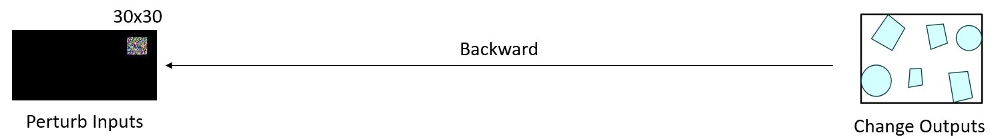
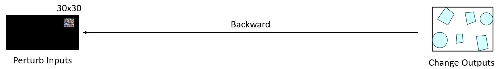
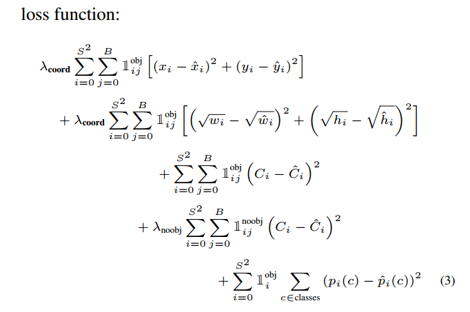

Adversarial Detection
Generating adversarial patches is as easy as drag and drop.

Adversarial Attacks against End-to-End Object Detection
End-to-End deep learning models have been adopted in a variety of tasks.
End-to-End deep learning models have been adopted in a variety of tasks.
End-to-End Object Detection (Facebook)
End-to-End Autonomous Driving (NVIDIA)
End-to-End Fluid Dynamics (Google Research)
However, deep neural networks are vulnerable to adversarial attacks.
Traning a model is like constructing a building.

Traning a model is like constructing a building.
However, a small perturbation can detroy all.
Traning a model is like constructing a building.
However, a small perturbation detroyes all.
Full Demo
Deep Learning Models are differentiable
 


Deep Learning Models are differentiable


Deep Learning Models are differentiable
Deep Learning Models are differentiable

Previous research usually calculates the gradient over the loss function.
\[\begin{aligned} \bigtriangledown_{\delta}J(h_{\theta}(x, \delta)), y) \end{aligned} \]
Deep Learning Models are differentiable
Previous research usually calculates the gradient over the loss function.
\[\begin{aligned} \bigtriangledown_{\delta}J(h_{\theta}(x, \delta)), y) \end{aligned} \]
- Calculating the loss function sometimes can be expensive. (slow iteration on the training set)
- For a real-time online attack, we don’t even know the ground truth. (infeasible to calculate the loss)
Deep Learning Models are differentiable
If we cannot use the loss function, what should we do?
One Targeted Attack

Multi Targeted Attack

Multi Untargeted Attack
Adversarial Detection
$$J_1(x, \delta, y_h) = max(\ \sigma(c) * \sigma(p_0) \ )$$
# One Targeted Attack
loss = K.max(K.sigmoid(K.reshape(out, (-1, 8))[:, 4]) * K.sigmoid(K.reshape(out, (-1, 8))[:, 5]))
grads = K.gradients(loss, self.model.input)
One Targeted Attack
Adversarial Detection
$$J_1(x, \delta, y_h) = max(\ \sigma(c) * \sigma(p_0) \ )$$
$$J_2(x, \delta, y_h) = \sigma(c) * \sigma(p_0)$$
# Multi Targeted Attack
loss = K.sigmoid(K.reshape(out, (-1, 8))[:, 4]) * K.sigmoid(K.reshape(out, (-1, 8))[:, 5])
grads = K.gradients(loss, self.model.input)
Multi Targeted Attack
Adversarial Detection
$$J_1(x, \delta, y_h) = max(\ \sigma(c) * \sigma(p_0) \ )$$
$$J_2(x, \delta, y_h) = \sigma(c) * \sigma(p_0)$$
$$J_3(x, \delta, y_h) = \sigma(c) * \sum\sigma(p_i)$$
# Multi Untargeted Attack
loss = K.sigmoid(K.reshape(out, (-1, 8))[:, 4]) * K.sum(K.sigmoid(K.reshape(out, (-1, 8))[:, 5:]))
grads = K.gradients(loss, self.model.input)
Multi Untargeted Attack
Weakness: fast but not the best
Object Detection in real world

- No access to the gradient.
- Infeasible to add digital perturbation.